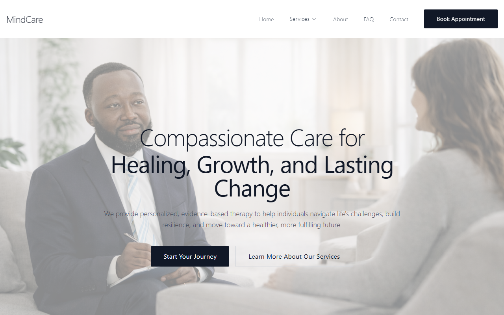
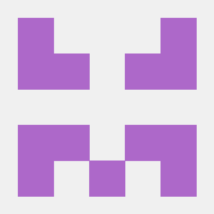
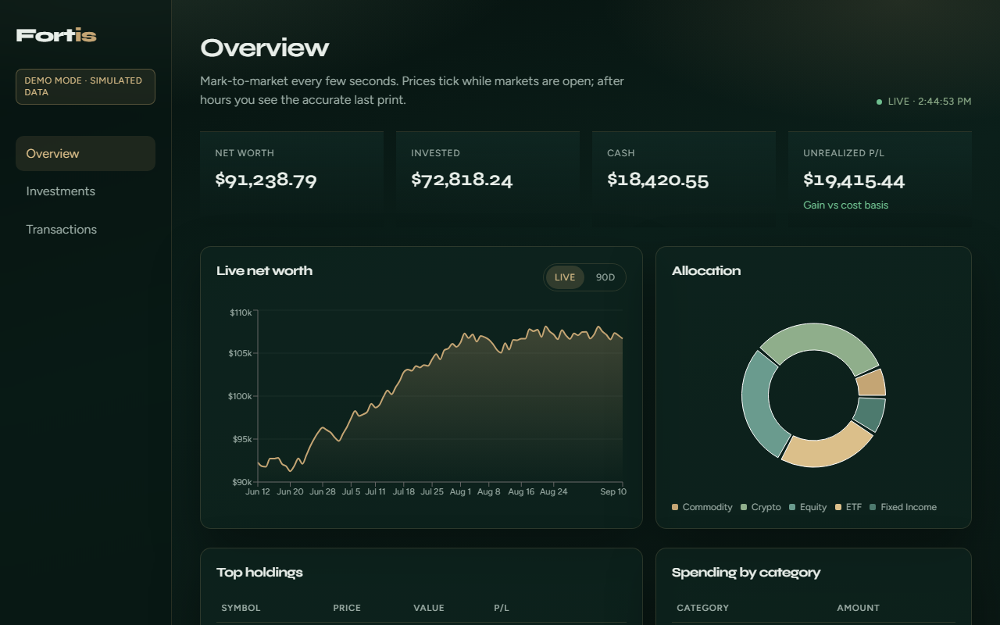
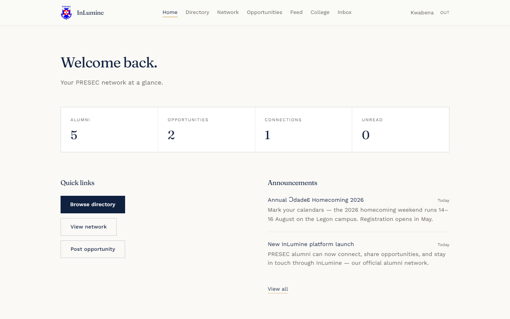
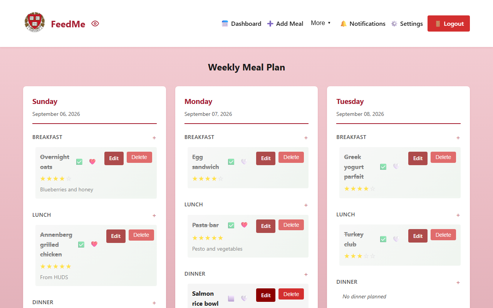
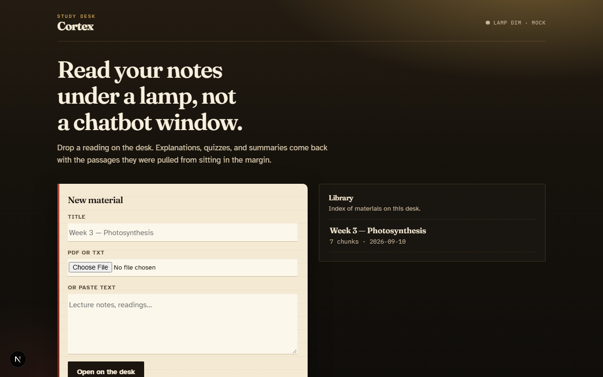
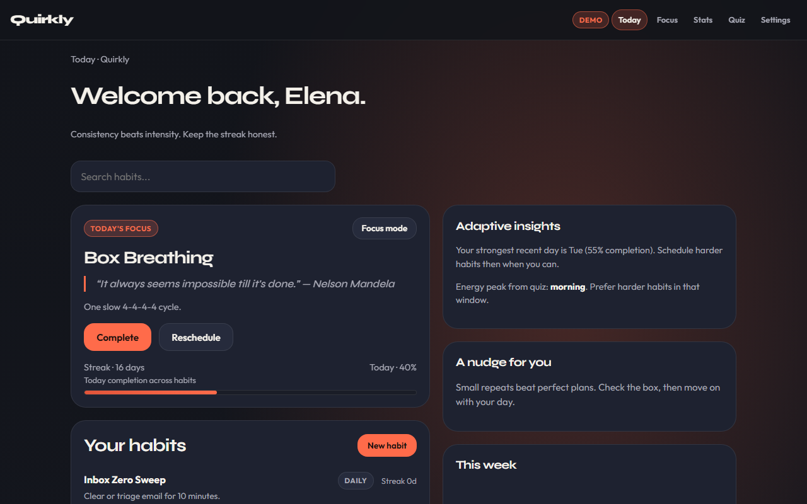
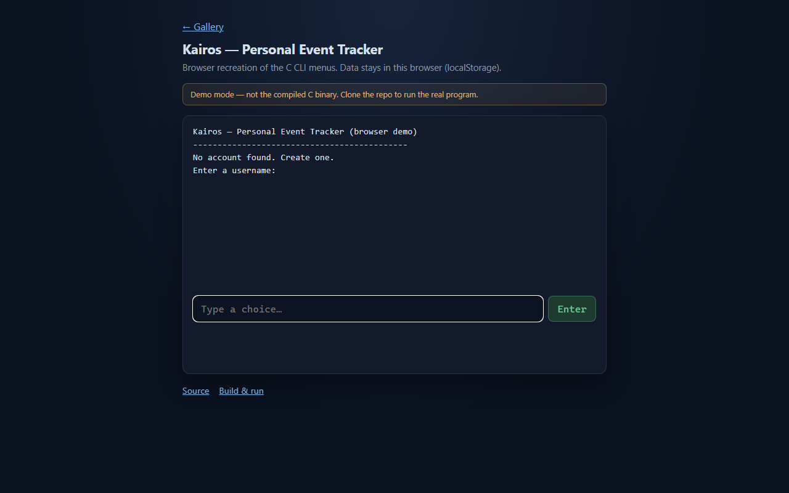
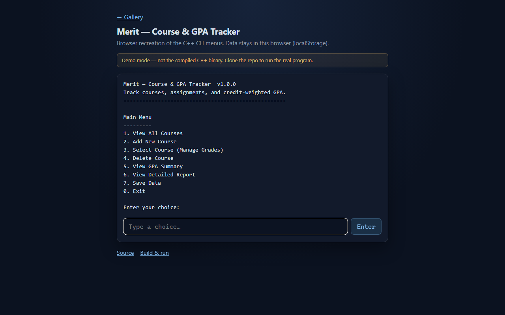

Live demo
React · Vite
MindCare
Practice site for mental-health services — booking, FAQ, and a calm clinical layout.

Selected work
CS + Economics @ Harvard University · Cambridge, MA
I like building things. Lately that’s meant RAG pipelines, LLM tooling, and a few fintech dashboards along the way. Always curious.

Practice site for mental-health services — booking, FAQ, and a calm clinical layout.

Personal wealth dashboard — investments, cash flow, and live-looking portfolio trends.

PRESEC alumni network — directory, opportunities, and admin RBAC. Needs a real server, so Pages only hosts run notes.

Harvard meal planner with HUDS dining-hall menus. The hosted preview is a recorded walkthrough.

Study desk for your own notes — streaming explanations, quizzes, and source passages in the margin.

Personality-aware habits — streaks, focus sessions, and a quiz that tunes the day.

Terminal event tracker for birthdays and anniversaries, recreated in the browser.

Course and GPA tracker with weighted grades and CSV export, as an in-browser CLI.